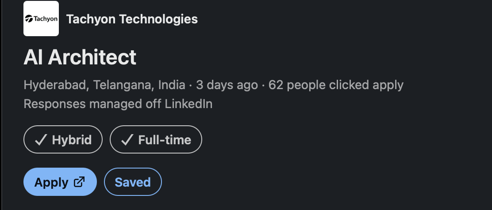

Job description · 24 September 2026
AI Architect
Tachyon Technologies — Hyderabad, Telangana, India · Hybrid · Full-time. “AI” here is short for artificial intelligence.
This page renders jd.md so the posting can be read comfortably and
re-read before a call. Everything inside the section headed The job description, word for
word is the company’s own wording: nothing has been added, softened, reordered or
characterised. Because the posting is left untouched, its abbreviations are expanded in a short
list just before it, in the order the posting uses them.
The posting. linkedin.com/jobs/view/4469298952 — captured at intake so the listing can be reopened and checked again later. Postings change, close, and get re-listed under new requisition numbers, so the link is recorded rather than the memory of it. The LinkedIn card says “Responses managed off LinkedIn”, which means the apply button leaves LinkedIn and the application lands in the company’s own applicant tracking system (the software a company uses to collect and sort applications).
The posting facts, as the LinkedIn card states them

The LinkedIn card, captured 24 September 2026
| Field | As the card states it |
|---|---|
| Company | Tachyon Technologies |
| Title | AI Architect |
| Location | Hyderabad, Telangana, India |
| Workplace type | Hybrid |
| Employment type | Full-time |
| Posted | “3 days ago” at the moment of capture (24 September 2026) |
| Applicant signal | 62 people clicked apply |
| Where responses go | “Responses managed off LinkedIn” |
| Posting URL | linkedin.com/jobs/view/4469298952 |
Before the posting: the words it uses
Expansions AI — artificial intelligence · Generative AI (shortened to GenAI) — artificial intelligence that produces new text, code or images rather than only classifying existing data · Agentic AI — artificial intelligence that plans and carries out a sequence of steps by calling tools, rather than answering in one shot · LLM — large language model · RAG — retrieval-augmented generation: the model is given relevant documents fetched at question time, so its answer is grounded in real source material · API — application programming interface · Azure — Microsoft’s cloud · AWS — Amazon Web Services · GCP — Google Cloud Platform · SAP — Systems, Applications and Products, the German enterprise-software vendor · ERP — enterprise resource planning software · CRM — customer relationship management software · Responsible AI — practices for building artificial intelligence that is safe, fair, transparent and accountable · POC — proof of concept, a demonstration built to show an idea works · REST — representational state transfer, the ordinary style of web API · NoSQL — non-relational databases, as opposed to the relational kind queried with SQL (structured query language) · Infrastructure-as-Code (IaC) — describing servers and networks in version-controlled text files that are applied automatically, instead of clicking through a console · CI/CD — continuous integration and continuous delivery · AWS Bedrock — Amazon’s managed service for calling foundation models · MCP — Model Context Protocol, an open standard for letting a model call external tools and data sources in a uniform way.
The job description, word for word
Everything from here to the end of Why Tachyon is the company’s own text, reproduced without edits.
About the job
AI Architect Enterprise AI | Generative AI | Agentic AI | Cloud Architecture | Hyderabad Generative AI and agentic systems are moving from pilots to the core of how enterprises operate — and Tachyon Technologies is where that shift is being architected. We’re looking for a senior AI Architect who wants to own that transformation end to end: designing the systems, setting the standards, and seeing solutions run in production at enterprise scale, not just in a slide deck. This is a role for someone who has already done real cloud architecture, has since built genuine depth in LLMs, RAG, and agentic design, and wants a platform where that combination is the whole job — not a side project bolted onto something else.
What You Will Do
- Architect end-to-end enterprise AI solutions spanning applications, APIs, data, cloud infrastructure, security, integrations, and user experience.
- Design and lead Generative AI and Agentic AI solutions using LLMs, RAG, enterprise search, tool/function calling, and multi-agent orchestration.
- Define cloud-native architectures for AI workloads on Azure, AWS, and/or GCP using managed AI services, containers, Kubernetes, and serverless patterns.
- Evaluate and select models, frameworks, vector databases, and cloud services against business, security, performance, and cost requirements.
- Design integrations between AI solutions and enterprise platforms — Salesforce, SAP, ServiceNow, ERP/CRM, data platforms, and external APIs.
- Create architecture blueprints, reference patterns, reusable components, and technical standards for AI delivery.
- Lead technical discovery, architecture workshops, design reviews, and proof-of-concept initiatives with engineering and customer teams.
- Define AI evaluation and observability approaches — grounding, accuracy, hallucination risk, latency, cost, and safety.
- Establish guardrails, human-in-the-loop controls, identity and access models, and Responsible AI practices.
- Mentor senior engineers and technical leads, and help build strong architecture practice across AI initiatives.
What You Bring
- 15+ years in software engineering, solution architecture, enterprise architecture, or cloud architecture, with recent hands-on technical work.
- A production GenAI or Agentic AI system you’ve personally architected and shipped — not a POC — using LLMs, RAG, tool/function calling, or multi-agent orchestration.
- Deep, hands-on cloud architecture experience on Azure, AWS, or GCP; multi-cloud experience is a strong plus.
- Working fluency with modern AI frameworks such as LangChain, LangGraph, Semantic Kernel, AutoGen, or CrewAI.
- Strong software engineering foundation with hands-on programming, preferably Python, and the ability to review implementation-level decisions.
- Solid grounding in microservices, REST APIs, event-driven architecture, and enterprise integration patterns.
- Experience with relational, NoSQL, and vector data platforms, and designing data/knowledge access patterns for AI.
- Excellent communication — equally comfortable with engineering teams and business/technology leaders.
Also Great to Have
- Infrastructure-as-Code (Terraform, Bicep, CloudFormation), CI/CD, and production support practices.
- Hands-on exposure to Azure OpenAI/AI Foundry, AWS Bedrock, or Google Vertex AI/Gemini.
- Cloud architecture certification from Azure, AWS, or GCP.
- Experience building reusable AI platforms, accelerators, or enterprise AI capabilities.
- Exposure to Model Context Protocol (MCP), knowledge graphs, or advanced enterprise search.
- Background in customer-facing architecture, solutioning, or technical consulting.
Why Tachyon
- Own architecture decisions on high-visibility enterprise AI programs, from first workshop to production rollout.
- Work at the intersection of deep cloud engineering and cutting-edge agentic AI — not one at the expense of the other.
- Shape reusable patterns and standards that other architects and engineers will build on.
- Direct exposure to customer stakeholders and technology leadership, with real influence over technical direction.